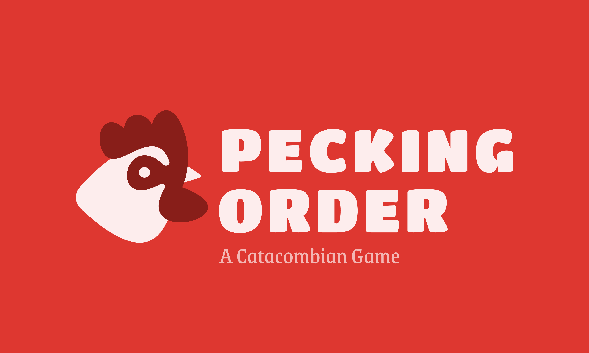
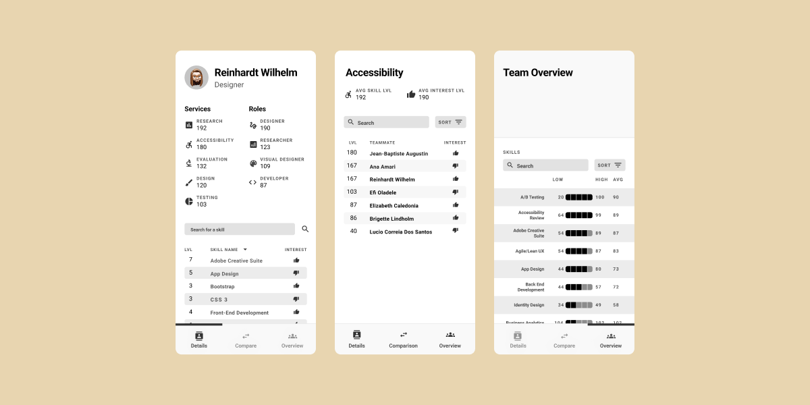
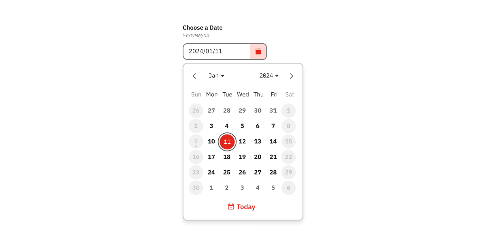
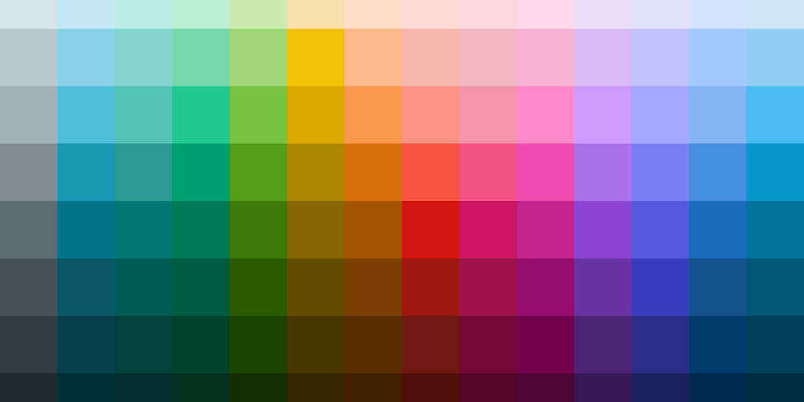

UX Designer & Product Strategist · Brooklyn, NY
Grant
Thomas
I help cross-functional teams translate messy, complex problems into elegant product experiences — without losing the strategic intent somewhere between Figma and production.
See the Work ↓Selected Work
2020 — Present
Survivor Social Game
Designed and built a week-long social gaming experience from Google Sheets prototype to full web application. Created mechanics that fostered real relationships — two players even got engaged.
View Case Study →
UX Skills Assessment Tool
SQL-powered analytics in Google Sheets to optimize team composition for 21 UX professionals across 120+ skills. Revealed hidden capabilities and drove data-driven staffing decisions.
View Case Study →
Design System Documentation Portal
Led research and redesign of enterprise design system documentation serving 100k+ employees across 50+ pharmaceutical brands. Reduced support requests and accelerated deployment cycles.
View Case Study →
Date Picker Redesign
Post-refresh audit of an enterprise date picker component — resolving alignment issues, state inconsistencies, and usability gaps across a global design system serving every brand.
View Case Study →
Brand Color System
Built an HCT-based color system for a global pharmaceutical brand portfolio — partnering with Wieden+Kennedy to create an accessible, competitively differentiated palette spanning multiple product brands.
View Case Study →
Critterpedia
Fan-built critter tracker for Animal Crossing: New Horizons — because the right tool didn't exist. Filter all 200 critters by month, hemisphere, type, and catch status. Still live today.
View Case Study →About Me
My path to UX design started exploring settings pages in video games as a kid. I was fascinated by how small interface changes could dramatically impact the experience.
My approach centers on discernment, curiosity, and groundedness. I start every project with deep discovery — understanding all the inputs, constraints, and context before jumping to solutions.
I'm passionate about accessibility and working directly with developers to ensure designs are both beautiful and feasible in production. Outside of work I'm a street photographer, Stardew Valley enthusiast, and audiobook listener.
Full Bio →Research & Strategy
- Qual & Quant Research
- User Interviews
- Data Analysis & SQL
- Product Strategy
Design & Systems
- Design Systems
- Information Architecture
- Figma & Prototyping
- Visual Design
Product & Leadership
- Product Ownership
- Scrum Master
- Stakeholder Management
- Cross-functional Collab
Technical
- Front-end Development
- Google Sheets / SQL
- API Specification
- Analytics & Metrics